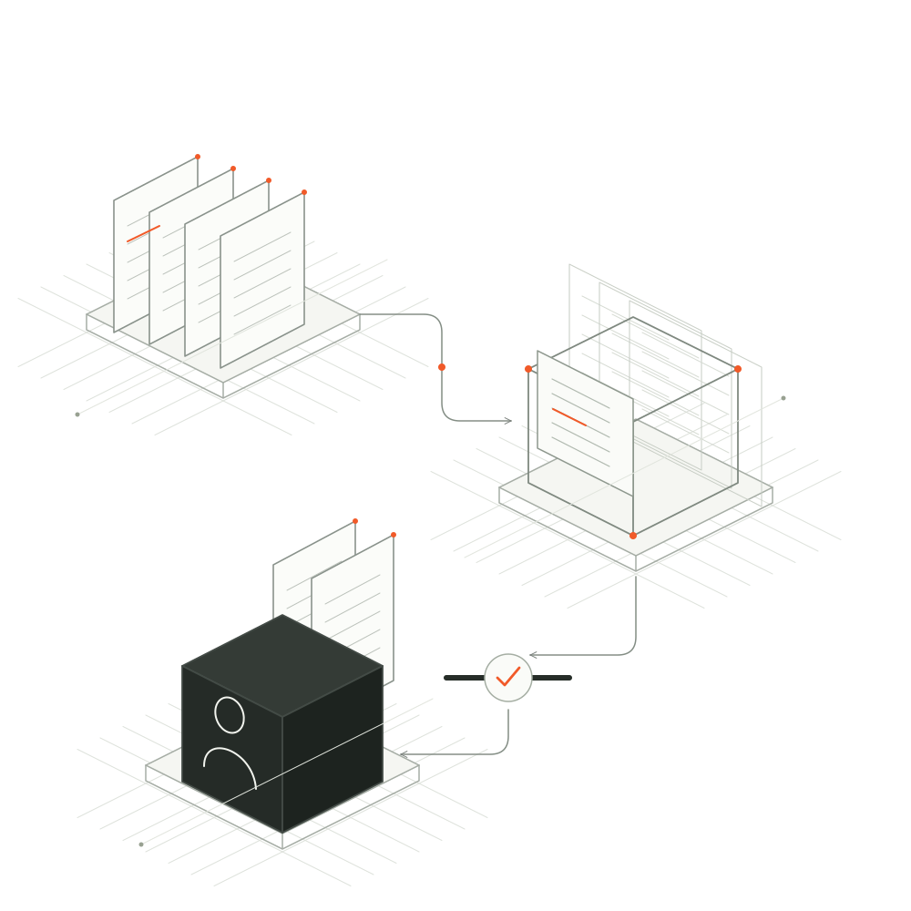
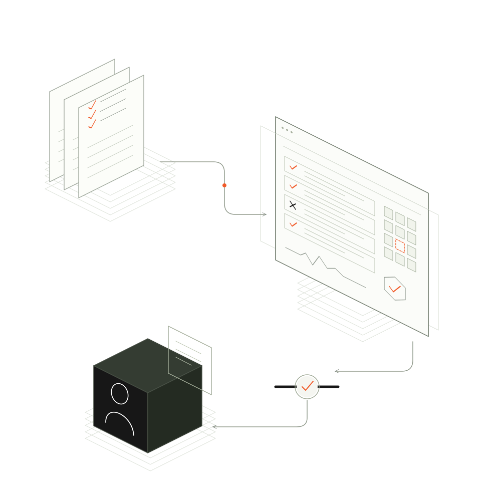
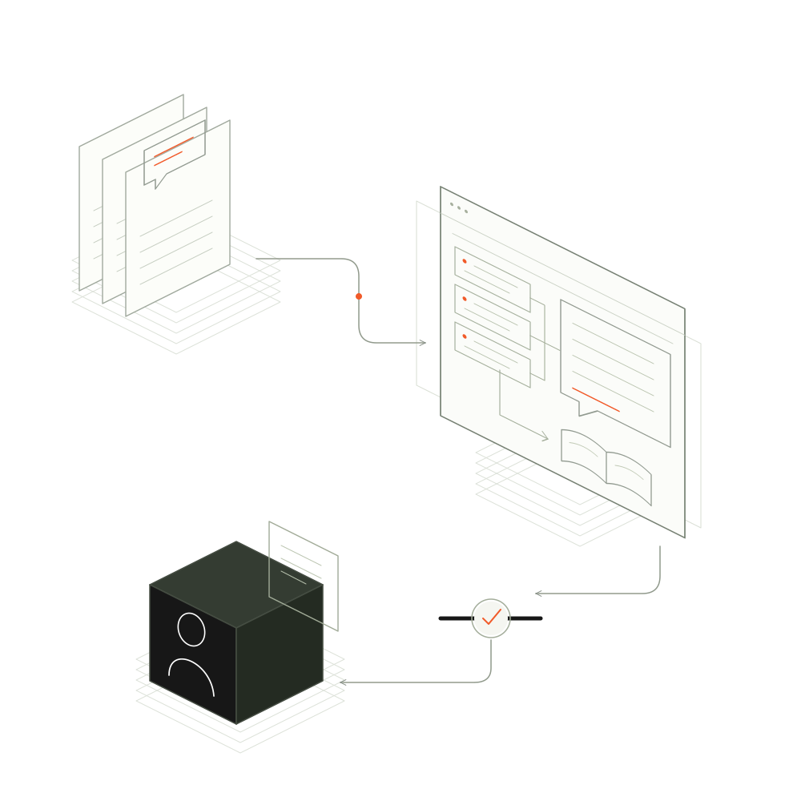
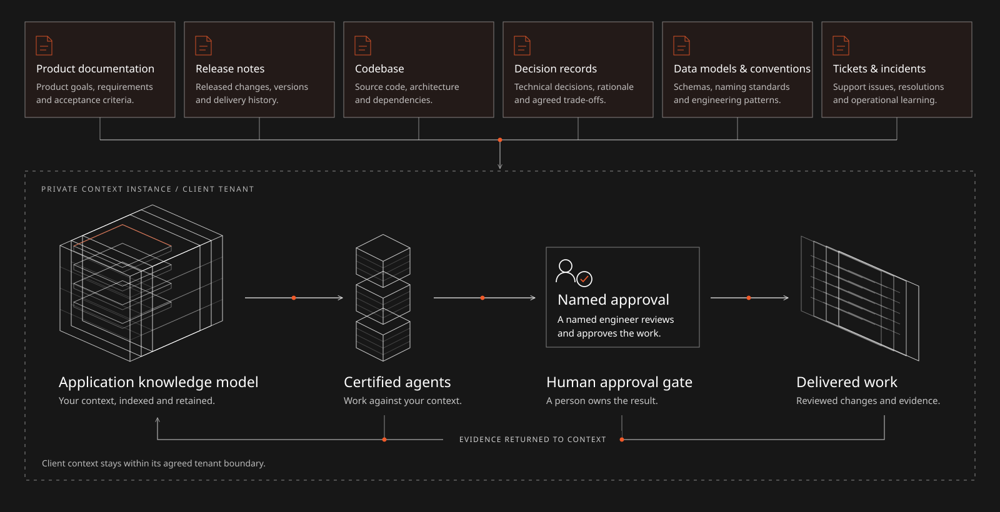
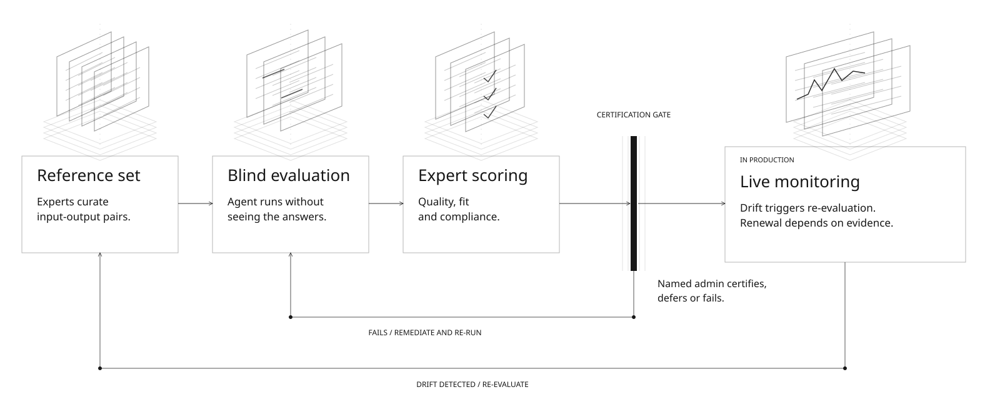

The framework behind
the outcomes.
An AI-native delivery framework spanning the full software lifecycle, built and run by our own engineers.
Clear requirements before delivery begins.
Enriches stories, drafts acceptance criteria and flags ambiguity for review.
- Product contextGoals and requirements
- BA AgentProposed stories and acceptance criteria
- Named engineerReview and approve
Human approval stays the boundary.

Changes with a clear path to review.
Implements agreed changes and prepares work for review.
- Story contextAgreed requirements
- Dev agentProposed change
- Named engineerReview and approve
Human approval stays the boundary.

Test every change against agreed criteria.
Generates tests from acceptance criteria, identifies coverage gaps and prepares test evidence.
- Acceptance criteriaExpected behaviour
- QA AgentTest results and coverage
- Named engineerReview and approve
Human approval stays the boundary.

Release changes through a controlled pipeline.
Prepares delivery pipelines, assesses release risk and routes changes through approval gates.
- Release contextReviewed changes and deployment requirements
- DevOps AgentPipeline checks and release preparation
- Named engineerReview and approve
Human approval stays the boundary.

Keep reliability connected to human oversight.
Triages incidents, supports root-cause analysis and prepares postmortems with supporting evidence.
- Operational contextTelemetry, alerts and incidents
- SRE AgentIncident analysis and proposed response
- Named engineerReview and approve
Human approval stays the boundary.

Resolve issues. Retain what you learn.
Classifies tickets, drafts resolutions and prepares knowledge updates for review.
- Support contextTickets and previous resolutions
- Support AgentTicket classification and draft resolution
- Named engineerReview and approve
Human approval stays the boundary.

Your estate.
A private knowledge model.

Nothing goes
live unproven.

Every cycle strengthens the next.
Delivery evidence builds retained knowledge. Updated agents pass through the same certification gate before returning to delivery.


Configurable
AI-SDLC autonomy.
Choose how much AI does.
Accountability stays.
Human approval stays the boundary.
AI use that fits your environment.
Before implementation, we agree which tools and data sources may be used, where code and data can be processed, who approves changes, and what evidence is retained.
We align with your access controls, delivery pipeline and engineering review process.
See how the framework
fits your team.
Start with your systems, your priorities and the outcome you need.